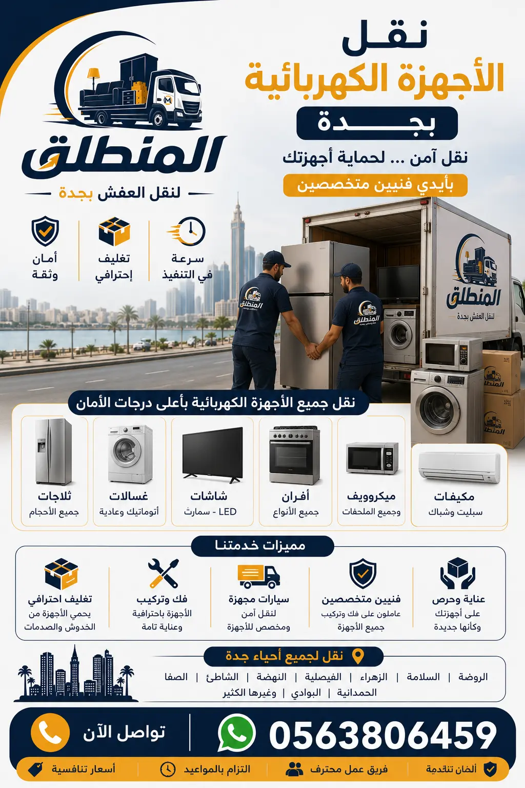

هل تبحث عن نقل الأجهزة الكهربائية بجدة بأمان واحترافية؟ شركة المنطلق توفر لك نقل ثلاجات، غسالات، مكيفات، شاشات، وأجهزة إلكترونية بأسعار تنافسية. نحن أفضل شركة نقل أجهزة كهربائية بجدة، نضمن لك وصول أجهزتك بحالة ممتازة مع خدمات التغليف الاحترافي والنقل الآمن. نقل الأجهزة المنزلية بجدة معنا يعني راحة البال التامة. اتصل الآن 0563806459 للحصول على معاينة مجانية وعرض سعر فوري.

شركة المنطلق هي أفضل شركة نقل أجهزة كهربائية بجدة، وتقدم خدمات متخصصة في نقل الأجهزة الكهربائية بأمان واحترافية. الأجهزة الكهربائية مثل الثلاجات والغسالات والمكيفات والشاشات تحتاج إلى عناية خاصة أثناء النقل، لأنها حساسة للصدمات والاهتزازات. شركة نقل عفش بجدة المنطلق لديها خبرة طويلة في التعامل مع جميع أنواع الأجهزة الكهربائية. نستخدم سيارات نقل الأجهزة الكهربائية مجهزة بأنظمة تثبيت متطورة، ونقدم تغليفًا احترافيًا باستخدام مواد عازلة للصدمات. نقل الأجهزة المنزلية بجدة معنا يضمن لك وصول أجهزتك بحالة ممتازة. خدماتنا تشمل نقل جميع أنواع الأجهزة الكهربائية للمنازل والشركات. نقل الأجهزة الكهربائية ليس مجرد نقل، بل هو فن يتطلب خبرة ومعدات خاصة. نحن نقدم أفضل خدمة نقل أجهزة كهربائية بجدة بأسعار تنافسية. اتصل بنا الآن 0563806459 للحصول على معاينة مجانية.
تتميز شركة المنطلق بفريق عمل مدرب على التعامل مع الأجهزة الكهربائية الحساسة، ونحن نقدم ضمانًا على سلامة الأجهزة أثناء النقل. كيف تختار شركة نقل أجهزة كهربائية؟ اختر المنطلق التي تضع الجودة والأمان في مقدمة أولوياتها. نحن نخدم جميع أحياء جدة، ونقدم خدمة على مدار الساعة. نقل الأجهزة الكهربائية بجدة مع شركة المنطلق يعني راحة البال التامة. اتصل بنا اليوم للحصول على أفضل الخدمات.
الأجهزة الكهربائية من أغلى المقتنيات في المنزل، وتحتاج إلى نقل متخصص لضمان سلامتها. نقل الأجهزة بنفسك أو باستخدام شركات غير متخصصة قد يؤدي إلى تلفها أو تعطلها. شركة نقل عفش بجدة المنطلق توفر خدمة متخصصة في نقل الأجهزة الكهربائية. الأجهزة مثل الثلاجات تحتوي على غازات تبريد ومضغوطات حساسة للصدمات، والغسالات تحتاج إلى تثبيت براغي النقل، والمكيفات تحتاج إلى تفريغ الغاز قبل النقل، والشاشات حساسة للصدمات والضغط. نقل الأجهزة المنزلية بجدة يتطلب خبرة ومعرفة بكل نوع من الأجهزة. فريقنا لديه الخبرة الكافية للتعامل مع جميع هذه التحديات.
نقل الأجهزة الكهربائية يشمل أيضًا التغليف الاحترافي الذي يحمي الأجهزة من الخدوش والصدمات أثناء النقل. تغليف العفش بجدة لدينا يشمل تغليفًا خاصًا للأجهزة الكهربائية باستخدام مواد عازلة. شركة نقل أجهزة كهربائية بجدة المنطلق توفر لك راحة البال وتوفر عليك عناء البحث عن شركات غير موثوقة. نصائح تغليف الأجهزة تجدها في مدونتنا. لا تخاطر بأجهزتك، اختر أفضل شركة نقل أجهزة كهربائية بجدة المنطلق. اتصل الآن 0563806459 واحجز خدمتك.
تغليف الأجهزة الكهربائية هو الخطوة الأهم لضمان وصولها سالمة. خدمة تغليف العفش بجدة من شركة المنطلق تشمل تغليفًا احترافيًا لجميع أنواع الأجهزة. نستخدم البلاستيك الفقاعي (Bubble Wrap) ثلاثي الطبقات لحماية الأجهزة من الصدمات، والكرتون المقوى للشاشات والزجاجيات، والأغطية القماشية للأجهزة الكبيرة مثل الثلاجات والغسالات. تغليف الأجهزة الكهربائية يحميها من الخدوش والكسور وتراكم الغبار. مدونتنا عن تغليف العفش تقدم نصائح إضافية حول كيفية تغليف الأجهزة.
نقوم في نقل العفش مع التغليف بتغليف كل جهاز على حدة حسب حجمه وحساسيته. الثلاجة تُغلف بأغطية قماشية مع حماية الزوايا، والغسالة تُغلف مع تثبيت براغي النقل، والشاشات تُغلف بطبقات متعددة من البلاستيك الفقاعي والكرتون، والمكيفات تُغلف بأغطية خاصة لحماية المكونات الخارجية. نقل الأجهزة الكهربائية بجدة مع المنطلق يضمن لك تغليفًا احترافيًا يحمي أجهزتك. اتصل بنا لطلب خدمة التغليف الاحترافي قبل النقل. التغليف الجيد هو استثمار في سلامة أجهزتك.
نقل الثلاجات والمجمدات من أكثر عمليات النقل تعقيدًا، لأنها تحتوي على غازات تبريد ومضغوطات حساسة للصدمات. شركة نقل عفش بجدة المنطلق لديها خبرة في نقل الثلاجات بجدة بطريقة آمنة. قبل نقل الثلاجة، نقوم بتفريغها من المحتويات وتنظيفها وتجفيفها، ثم نثبت الأبواب بشريط لاصق لمنع فتحها أثناء النقل. نستخدم سيارات نقل الأجهزة الكهربائية مجهزة بأنظمة تثبيت، ونضع الثلاجة في وضع مستقيم أثناء النقل لمنع تلف الضاغط. نقل المجمدات يتم بنفس الطريقة مع التأكد من ذوبان الجليد تمامًا قبل النقل.
سيارات نقل العفش بجدة لدينا مجهزة خصيصًا لنقل الأجهزة الكهربائية الكبيرة. نوصي بعدم تشغيل الثلاجة لمدة 4-6 ساعات بعد النقل للسماح للغازات بالاستقرار. نقل الأجهزة المنزلية بجدة مع المنطلق يعني أن فريقنا المدرب يعرف كل هذه التفاصيل. خدماتنا تشمل نقل الثلاجات بأحجامها المختلفة. ثقتك بنا هي مسؤوليتنا. اتصل بنا الآن 0563806459 لطلب نقل ثلاجتك بأمان.
نقل الغسالات والنشافات يتطلب عناية خاصة، خاصة الغسالات الأوتوماتيكية التي تحتوي على محركات حساسة للصدمات. شركة نقل عفش بجدة المنطلق تقدم خدمة متخصصة في نقل الغسالات بجدة. قبل النقل، نقوم بتفريغ الغسالة من الماء، وتنظيفها، وتثبيت براغي النقل (إذا كانت موجودة) لحماية الحلة الداخلية. نستخدم سيارات نقل الأجهزة الكهربائية مجهزة بأنظمة تثبيت، ونضع الغسالة في وضع مستقيم أثناء النقل. نقل النشافات يتم بنفس الطريقة مع التأكد من تفريغ خزان الماء إذا كان موجودًا.
سيارات نقل العفش بجدة لدينا مجهزة لنقل الغسالات والنشافات بأمان. ننصح بعدم تشغيل الغسالة لمدة 24 ساعة بعد النقل للسماح للمكونات الداخلية بالاستقرار. نقل الأجهزة المنزلية بجدة مع المنطلق يعني أن أجهزتك في أيدٍ أمينة. اتصل بنا لطلب خدمة نقل الغسالة والنشافة. فريقنا المدرب سيتولى كل شيء من الفك إلى التركيب.
نقل المكيفات من أصعب عمليات النقل، لأنها تتطلب تفريغ غاز التبريد وفك وتركيب احترافي. فك وتركيب الأثاث بجدة من شركة المنطلق يشمل فك وتركيب المكيفات بواسطة فنيين متخصصين. نقوم بتفريغ غاز التبريد من المكيف، وفك الوحدة الداخلية والخارجية، وتغليفها بشكل منفصل، ثم نقلها إلى الموقع الجديد وتركيبها وإعادة شحن الغاز. نقل المكيفات بجدة يتطلب معدات خاصة وفنيين مدربين. فريقنا لديه الخبرة الكافية للتعامل مع جميع أنواع المكيفات (سبليت، شباك، مخفي).
مدونتنا عن فك وتركيب الأثاث تقدم نصائح حول التعامل مع المكيفات. نقل الأجهزة المنزلية بجدة مع المنطلق يضمن لك نقل المكيفات بأمان واحترافية. خدماتنا تشمل نقل جميع أنواع التكييف. لا تحاول نقل المكيف بنفسك، فقد يؤدي ذلك إلى تسرب الغاز أو تلف الضاغط. اتصل بنا 0563806459 لطلب خدمة نقل المكيفات.
نقل الشاشات والأجهزة الإلكترونية مثل التلفزيونات، وأجهزة الكمبيوتر، وأجهزة الصوت، يتطلب أقصى درجات الحماية. تغليف العفش بجدة من شركة المنطلق يشمل تغليفًا خاصًا للشاشات باستخدام البلاستيك الفقاعي والكرتون المقوى المخصص. نضع الشاشات في وضع عمودي أثناء النقل لمنع الضغط على الشاشة، ونستخدم مواد عازلة للصدمات. نقل الشاشات بجدة معنا يضمن لك وصولها بحالة ممتازة. مدونتنا عن تغليف العفش تقدم نصائح إضافية لتغليف الأجهزة الإلكترونية.
نقل الأجهزة الإلكترونية مثل أجهزة الألعاب، والسماعات، والمكبرات، يتم بتغليف كل قطعة على حدة باستخدام مواد مضادة للكهرباء الساكنة. نقل العفش مع التغليف هو الخيار الأمثل لحماية أجهزتك الإلكترونية. نقل الأجهزة المنزلية بجدة مع المنطلق يعني أن أجهزتك الإلكترونية في أيدٍ أمينة. اتصل بنا لطلب خدمة نقل الشاشات والأجهزة الإلكترونية. فريقنا المدرب يعرف كيفية التعامل مع هذه الأجهزة الحساسة.
سيارات نقل الأجهزة الكهربائية هي أساس النقل الآمن. شركة المنطلق تمتلك أسطولاً من سيارات نقل العفش بجدة المجهزة خصيصًا لنقل الأجهزة الكهربائية. السيارات مزودة بأنظمة تثبيت متطورة، وأرضيات مبطنة، وحبال تثبيت قابلة للضبط، وأغطية واقية. دينات نقل العفش بجدة لدينا مجهزة بأنظمة تعليق متطورة تقلل من الاهتزازات أثناء النقل، مما يحمي الأجهزة الحساسة. سيارات نقل الأجهزة الكهربائية لدينا تختلف أحجامها حسب حجم الأجهزة، من سيارات صغيرة للأجهزة الفردية إلى شاحنات كبيرة لنقل منزل كامل.
جميع سيارات نقل الأجهزة الكهربائية لدينا مجهزة بأنظمة مراقبة لضمان سلامة الأجهزة أثناء النقل. خدماتنا تشمل توفير السيارة المناسبة حسب حجم ونوع الأجهزة. نقل الأجهزة المنزلية بجدة مع المنطلق يعني أن أجهزتك تنقل في سيارات مصممة خصيصًا لهذا الغرض. اتصل بنا لمعرفة المزيد عن أسطول سياراتنا المجهزة.
نقدم في شركة المنطلق أسعارًا تنافسية لـ نقل الأجهزة الكهربائية بجدة. الأسعار التالية تقديرية وتعتمد على حجم الجهاز والمسافة والخدمات المطلوبة. للحصول على عرض سعر دقيق، ننصح بالاتصال بنا لإرسال مندوب للمعاينة المجانية. اسعار نقل العفش في جدة نقدمها بشفافية ووضوح.
| نوع الجهاز | السعر (ريال) | ملاحظات |
|---|---|---|
| ثلاجة (كبيرة) | 150 - 250 | شامل التغليف والنقل |
| ثلاجة (صغيرة) | 100 - 150 | شامل التغليف والنقل |
| غسالة أوتوماتيك | 120 - 200 | شامل براغي النقل |
| نشافة | 100 - 150 | شامل التغليف |
| مكيف سبليت | 200 - 400 | شامل الفك والتركيب والغاز |
| شاشة 55 بوصة | 80 - 150 | تغليف خاص + نقل |
| جهاز كمبيوتر | 50 - 80 | تغليف مضاد للكهرباء |
| فرن كهربائي | 80 - 120 | شامل التغليف |
| ميكروويف | 40 - 60 | تغليف بسيط |
| حزمة أجهزة متعددة | خصم 20% | عرض خاص |
* أسعار خاصة للشركات والعقود الكبيرة – اتصل لمعرفة العروض الحالية. تواصل معنا للحصول على عرض سعر مخصص.
حماية الأجهزة الكهربائية من التلف أثناء النقل تتطلب اتباع نصائح مهمة. كيف تختار شركة نقل أجهزة كهربائية؟ اختر شركة متخصصة مثل المنطلق. إليك نصائحنا: أولاً، تأكد من تغليف الأجهزة بشكل احترافي باستخدام مواد عازلة. ثانيًا، فك الأجهزة الكبيرة مثل المكيفات بواسطة فنيين متخصصين. ثالثًا، تثبيت الأجهزة داخل السيارة باستخدام حبال تثبيت. رابعًا، نقل الأجهزة في وضع مستقيم خاصة الثلاجات والغسالات. خامسًا، انتظر 4-6 ساعات قبل تشغيل الثلاجة بعد النقل. سادسًا، تأكد من تأمين الشاشات في وضع عمودي.
سابعًا، استخدم شركة نقل أجهزة كهربائية لديها خبرة في التعامل مع الأجهزة الحساسة. شركات نقل العفش بجدة كثيرة، لكن المنطلق تتفوق بجودة خدماتها. ثامنًا، اطلب معاينة مجانية لتقييم الأجهزة وتحديد احتياجات النقل. تاسعًا، تأكد من وجود ضمان على الأجهزة أثناء النقل. أفضل شركة نقل عفش في جدة هي التي تقدم هذه الضمانات. عاشرًا، تواصل مع المنطلق للحصول على خدمة نقل آمنة واحترافية. اتصل بنا الآن لحجز خدمة نقل الأجهزة الكهربائية.
نقدم خدمات نقل الأجهزة الكهربائية بجدة في جميع أحياء المدينة. نحن نخدم حي الروضة، حي الصفا، حي الفيصلية، حي السلامة، حي الزهراء، حي الربوة، حي النسيم، حي البساتين، والمحمدية، والحمراء، والشاطئ، وأبحر، والنعيم، والسبعين، والبوادي، وغيرها من الأحياء.
مهما كان موقعك في جدة، فإن فريقنا جاهز للوصول إليك خلال 30 دقيقة من الاتصال لاستلام أجهزتك ونقلها بأمان. نحن نخدم أيضاً ضواحي جدة مثل بحرة وثول وذهبان. شاهد جميع الأحياء التي نخدمها على صفحتنا المخصصة.
نفخر بثقة عملائنا الكرام الذين استخدموا خدمات نقل الأجهزة الكهربائية لدينا في جدة. هذه الآراء تعكس التزامنا بالجودة والاحترافية. أفضل شركة نقل عفش في جدة تحظى بتقييمات إيجابية من عملائها.
"تعاملت مع شركة المنطلق لنقل ثلاجتي وغسالتي من جدة إلى مكة، وكانت الخدمة ممتازة. التغليف كان احترافياً، والأجهزة وصلت بحالة ممتازة. أنصح أي شخص يبحث عن نقل الأجهزة الكهربائية بجدة بالتواصل معهم."
— أبو خالد، حي الروضة
"الحمد لله، نقلت مكيفات منزلي مع المنطلق. قاموا بفك المكيفات وتفريغ الغاز وتركيبها في المنزل الجديد. الخدمة كانت سريعة واحترافية. أفضل شركة نقل مكيفات بجدة بلا شك."
— الأستاذة نورة، حي الصفا
"نقلت شاشتي 65 بوصة مع المنطلق، وكان التغليف ممتازاً واستخدام المواد العازلة رائعاً. الشاشة وصلت سالمة. أوصي بهم لكل من يبحث عن نقل أجهزة إلكترونية بجدة."
— المهندس سامي، حي السلامة
"نقلت جميع أجهزة منزلي مع المنطلق، وكانوا محترفين جداً. الأسعار كانت مناسبة، والخدمة كانت متكاملة من التغليف إلى النقل والتركيب. شكراً لكم."
— أم محمد، حي الزهراء
شركة المنطلق هي أفضل شركة نقل أجهزة كهربائية بجدة، بفضل خبرتها وتغليفها الاحترافي وأسعارها التنافسية.
تتراوح تكلفة نقل الثلاجة بين 150 و250 ريالاً حسب حجمها والمسافة، وتشمل التغليف والنقل.
نعم، نقدم خدمة تغليف الأجهزة الكهربائية باستخدام مواد عازلة للصدمات.
نعم، نوفر فك وتركيب المكيفات مع تفريغ الغاز وإعادة شحنه.
نقوم بتثبيت براغي النقل، وتغليف الغسالة، ونقلها في وضع مستقيم لمنع تلف الحلة الداخلية.
نعم، لدينا سيارات مجهزة بأنظمة تثبيت وامتصاص صدمات.
نعم، نقدم ضماناً شاملاً على سلامة الأجهزة أثناء النقل ضد أي ضرر نادر.
تستغرق من ساعة إلى 3 ساعات حسب عدد الأجهزة والمسافة.
نعم، نقدم خدمة نقل الأجهزة الكهربائية بين جدة ومكة والرياض والمدن الأخرى.
اتصل بنا على 0563806459 أو عبر واتساب لطلب معاينة مجانية.
نعم، ننقل جميع أحجام الشاشات بتغليف خاص ووضع عمودي لضمان السلامة.
نعم، لدينا عقود خاصة للشركات بأسعار تنافسية وخدمات مخصصة.
نعم، نقوم بتغليفها ونقلها بأمان مع بقية الأجهزة.
يتراوح سعر نقل المكيف سبليت بين 200 و400 ريال شامل الفك والتركيب والغاز.
نقوم بفحص الأجهزة مع العميل بعد النقل للتأكد من سلامتها، ونقدم تقريراً بالحالة.
مع شركة المنطلق، تحصل على خدمة نقل أجهزة كهربائية آمنة واحترافية مع تغليف وفك وتركيب وضمان. اتصل الآن 0563806459 أو تواصل عبر واتساب للحصول على معاينة مجانية وعرض سعر فوري.